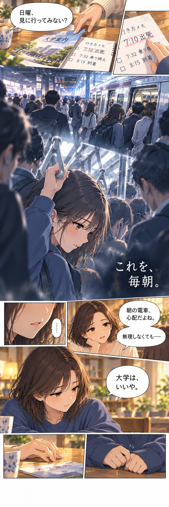
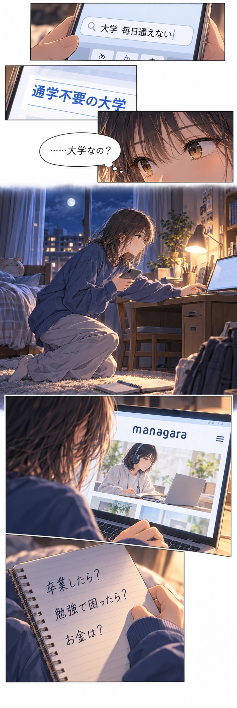
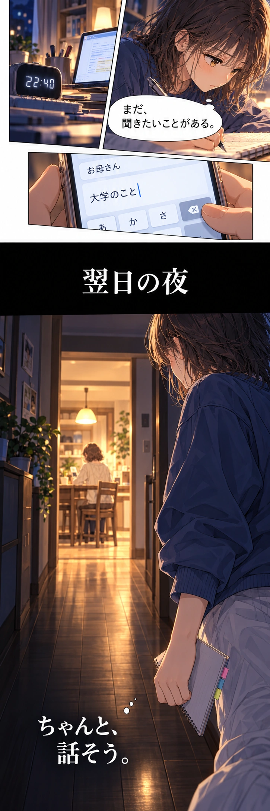
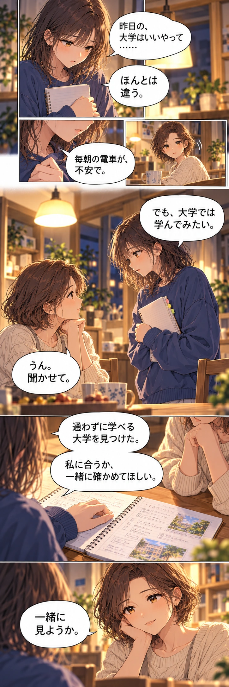
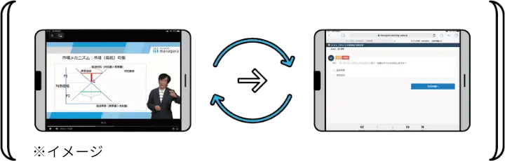
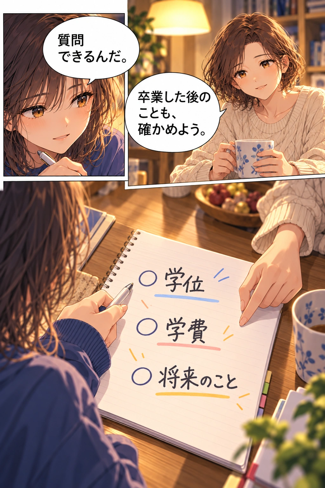

ふたりが見つけた、学びのかたち
画面の向こうに、
授業も、相談できる人も。
managaraは、通信制大学のアライアンス。経済学部・情報デザイン学部とも、スクーリングなしで卒業を目指せます。

見て、確かめて、自分の言葉に。
映像講義に加え、小テストやミニレポートなどで理解を深めます。課題・試験の形式は科目によって異なります。
学修にはパソコンやインターネット環境などの準備が必要です。学部ごとの推奨環境も確認しましょう。
公式で授業の流れを見る ↗「わからない」を、質問できる。
学修の疑問は教員や指導補助者へオンラインで質問。大学生活の不安は、学生サポート担当に相談できます。
公式で学修サポートを見る ↗
学びたいことから、選ぶ。
学部も、費用も。
自分に合う条件を
確かめよう。
新潟産業大学
経済学部
経済や経営を学び、
卒業時には学士（経済経営）を取得。
ベーシックコース・年間学費33万円
授業料30万円＋システム利用料3万円。入学金5万円・入学検定料1万円別。教科書等の費用が別途必要となる場合があります。
経済学部の学費・条件を見る ↗開志創造大学
情報デザイン学部
情報やITを学び、
卒業時には学士（情報）を取得。
ベーシックコース・年間学費30.6万円
入学金3万円・入学選考料3万円別。先端ITコースは2年次以降、年間13.5万円の教材費が追加されます。
情報デザイン学部の学費・条件を見る ↗表示はベーシックコースの学費です。スタンダード・プレミアムは学費・支援内容が異なります。最新の募集要項と必要な費用は、各大学の公式情報をご確認ください。
先輩は、どう学んでいる？
つまずいた課題を、
質問できる時間がある。
三根幸知さんは、課題でつまずいたときに週2回のオンラインクラスで質問し、新しいチャレンジと学びを両立しています。
公式掲載内容の要約。新潟産業大学 経済学部
スタンダードコース／掲載時20歳
伴走する支援を選びたい人へ
先輩のストーリーを公式で読む ↗個別のスタディコーチは、スタンダード・プレミアムの支援です。上記のベーシック学費には含まれません。